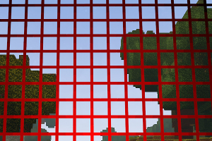
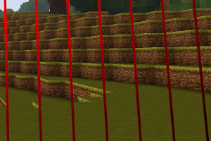
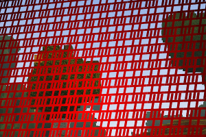
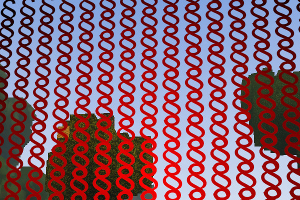
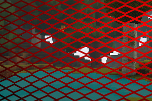

This is a tool that lets you convert images into codes that you can put into Arc Signs in the game Creativerse, free to play on Steam
Select the image you want to convert to CreatiSign code (or drag it onto the file selector), then alter the settings as you please and click the green "Execute" button at the bottom-left corner of this page.
The image will NOT be sent to any server. You can save this page on your desktop and use it offline too, if you're concerned about that :)
Only tested in Chrome, may work in other browsers.
range -8 ~ 8, measured in blocks, defaults to zero in the game when omitted and results in the graphic placed in the middle of a block space
<offset> tag:
range -8 ~ 8, measured in blocks, defaults to about 0.55 in the game when omitted
<width> tag:
range 0 ~ 8, amount of horizontal blocks the sign is allowed to grow before wrapping;
<size> tag:
using the "Arial SDF" font a period of size 1 is about 1/100th of a block
Main spacing tweak (%):
values higher than -10 start to show the spacing grid between pixels, the higher the value, the larger the horizontal spacing
Vertical spacing tweak (% of main spacing tweak):
100 gives equal spacing in both directions, 200 doubles the vertical spacing, 50 halves it and so forth
Max decimals after tweaking:
rounding for the the various numeric tags
RGB Gamma correction
range 0.01 ~ 7.99, preset to 0.5 to work around the current deviation of RGB shades, set this to 1 to disable gamma correction altogether
Alpha correction
range 0.01 ~ 7.99, preset to 1 (disabled) to let you use it only if necessary
helps reducing the code size, but can alter the colors of your image; short color codes will be used anyways if they match the long codes
necessary for large images but may blur pixel art; if you leave this off and try to convert large images your browser will likely hang or crash, you've been warned!
really need a hint on this?
Character to repeat
character(s) to use to draw pixels, defaults to the period
Font
Number of slices
range 1 ~ 64; number of horizontal slices / arc signs for splitting the image and get better resolutions;
Character count limit
10K chars is the current Arc Sign textbox limit; the bugs about the character computation have been hopefully all removed so you should not need to alter this number
Sign disposition
The preview is on the right-bottom corner, hover on it to enlarge it.
Output
Source previewWorking canvasResults preview
Placement preview (approx)
Signs (boxes with the number inside) are depicted seen from their left side
(when an arc sign faces at you its left side is your right side)
Offset goes from top (higher) to bottom (lower)
Zoffset goes from left (higher) to right (lower)
The green dot indicates the top of the resulting graphic (approx)
A red sign indicates a sign that will very likely exceed the offset or zoffset limits
In any case, the textareas will be clearly marked if they exceed any limit
Useful patterns
The results will vary in color and sizes / ratio depending on the image you feed to the generator, the following numbers have been found by trial and error using the "Arial SDF" font; since you can use more than one character to be repeated, in certain patterns you can simply add spaces to increase the horizontal spacing.
Simple grid

Set the character to repeat to "+" (plus sign)
Set the main spacing tweak around 360
Set the vertical spacing tweak to 100
Vertical bars

Set the character to repeat to "|" (pipe sign)
Set the main spacing tweak in the range from 900 (farther bars) down to zero (closer bars)
Tweak the vertical spacing as you please from 10 (shorter) to 100 (taller) to change the overall height of the pattern
Horizontal bars
Set the character to repeat to "-" (minus sign) or "=" (equal sign, for paired bars)
Set the main spacing tweak in the range from 160 (larger pattern) down to zero (narrower pattern)
Tweak the vertical spacing as you please from around 50 (closer bars) to 100 and over (farther and farther bars)
Interlocked grid

Set the character to repeat to "#" (hash sign)
Set the main spacing tweak to 430
Set the vertical spacing tweak to 100
Chains / door curtain

Set the character to repeat to "§" (section mark)
Set the main spacing tweak to 480
Set the vertical spacing tweak to 110
Industrial grid / fencing net

Set the characters to repeat to "<>" (less than mark & greater than mark)
Set the main spacing tweak to 350
Set the vertical spacing tweak to 100
Changelog
V2.5:
selecting / dragging an image shows its preview immediately
added ability to arrange arc signs in different ways
added the preview of both the signs arrangement and the graphics placement related to the arc signs (hover it to enlarge it)
the graphic now starts exactly at the chosen offset and grows towards the bottom, not somewhat higher than the chosen offset as it happened in previous versions
removed the ability to omit offset and zoffset tags by setting them to zero (the offset defaulting to about 0.55 when omitted is misleading in first place, and keeping them always in the code makes it easier to tweak them in the game)
added checkered background to the source and result previews to highlight transparent areas
the result preview now shows the gamma correction and grayscale effects
the textareas get clearly marked in red if any limit gets exceeded
added a "Working..." cover to show when the script is running
changed the default value of offset from 0 to 2, to make it stand a bit higher than the first arc sign
changed the default value of zoffset from 0.51 to 0 to have it stand exactly in the middle of the column
refactored the generation algorithm to optimize the slices usage (there won't be any wasted signs using just 2 or 3 K chars, perhaps just the last one depending on the settings); this got also rid of the bug that trimmed some lines at the end of the source image
refactored the whole script into separate files to ease the development
V2.4:
added slicing feature
added grayscale convertion option
added offset and zoffset controls
added font & character controls
added some recipes to create simple patterns
major change in spacing tweak: its sign has been reversed and now the <size> value remains untouched, it's the <mspace> and <line-height> values that change depending on the tweak
restyled the page a bit and tidied up code a little
V2.3: fixed extremely silly bug in alpha handling
V2.2: added gamma correction, fixed a bug that created artifacts at the border of the image in some cases
V2.1: converted line endings from "\n" to "\r\n"
V2: uses alternate font and periods to draw fully opaque pixels, added options to tweak the tag values, added autosize feature, added short hex values feature